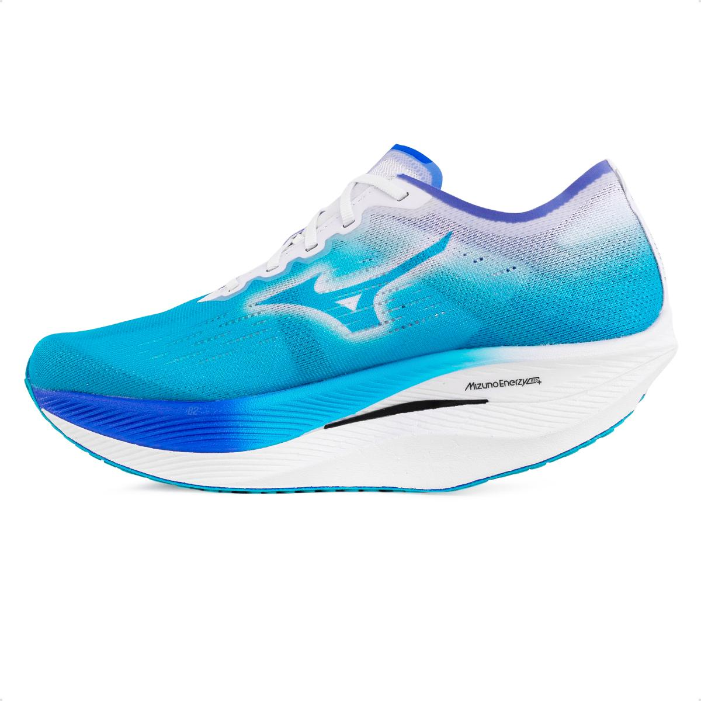
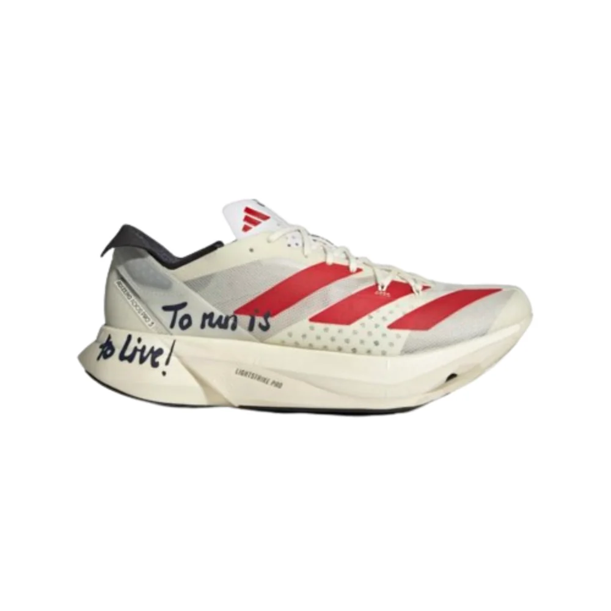

O Hoka Carbon X 3 é o tênis de corrida perfeito para atletas de alto desempenho. Mais leve em comparação à versão anterior, o Carbon X 3 conta com cabedal em “Engineered Knit”, oferecendo um ajuste mais seguro e estável do que nunca. O logotipo Hoka impresso na lateral do cabedal é feito em silicone brilhante. Com diferentes cores na parte de dentro e fora do cabedal, este tênis certamente chamará a atenção na linha de chegada. A entressola com tecnologia PROFLY+ proporciona passadas rápidas, que somado a placa de fibra de carbono em toda a extensão da entressola garante uma corrida veloz e cheia de energia. A exclusiva geometria “Meta-Rocker” aprimora ainda mais a performance desse tênis. A palmilha em EVA de memória oferece um ajuste personalizado e macio, enquanto o solado de EVA emborrachado oferece tração e durabilidade. Ideal para os dias de prova, o Carbon X 3 possui 5mm de drop e incríveis 221 gramas no tamanho 41 masculino. Sem nenhum material de origem animal, o Carbon X 3 é um produto vegano que ainda conta com materiais reciclados na composição do cabedal. Se você está procurando um calçado de corrida que ofereça o máximo em desempenho e conforto, o Hoka Carbon X 3 é o tênis perfeito para você.
Ultimo lançamento Mizuno
O tênis mais rápido para provas de longas distâncias, feito a partir do DNA de T&F da Mizuno. Placa de carbono, ângulo do solado desenvolvido para facilitar a entrada da pisada pelo antepé. Drop mais alto no calcanhar para manter a posição do pé angulado para a frente + suporte na região do antepé
Ultimo lançamento Adidas
O Adizero Adios Pro 3 é o expoente máximo dos produtos Adizero Racing. Foi projetado com e para atletas, visando alcançar feitos extraordinários. Seu objetivo é maximizar a eficiência durante a corrida. Nossos ENERGYRODS 2.0 com infusão de carbono proporcionam leve rigidez para uma passada mais ágil e eficiente. O Ultralight LIGHTSTRIKE PRO amortece cada passo com duas camadas da nossa espuma mais resistente, ajudando você a manter a energia a longo prazo. Tudo isso sobre uma fina camada de solado de borracha têxtil para tração extraordinária em condições secas e úmidas.
Nike Air Zoom Alphafly 3

O Nike Air Zoom Alphafly 3 é a mais recente inovação da Nike voltada para corredores de alta performance. Projetado para proporcionar velocidade e conforto, este modelo é uma evolução significativa em relação à versão anterior, com diversas melhorias técnicas que visam otimizar a experiência de corrida.
O Nike Air Zoom Alphafly 3 é uma escolha excepcional para corredores que buscam um tênis leve, responsivo e com melhorias em estabilidade e durabilidade. Com inovações significativas em sua construção e design, este modelo está posicionado como uma das principais opções para quem deseja melhorar sua performance em corridas de alta intensidade.